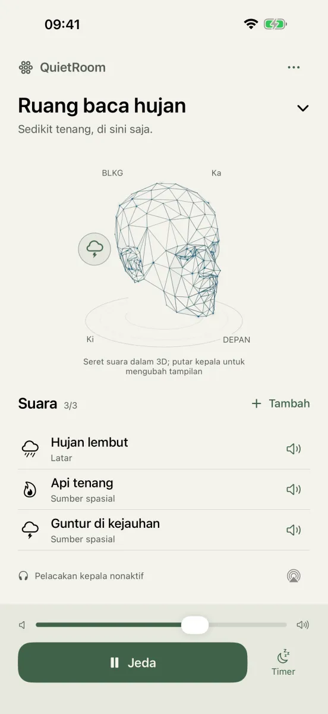
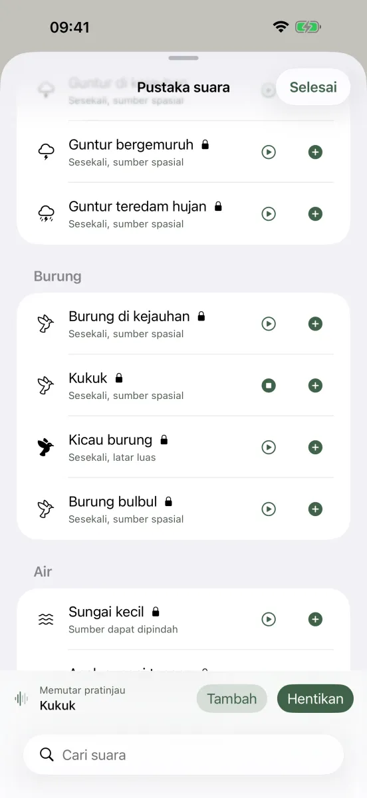
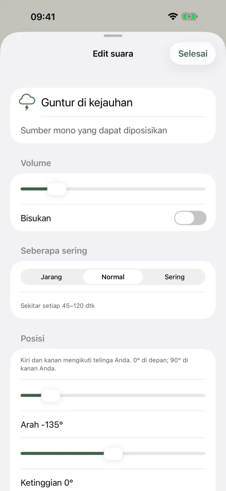
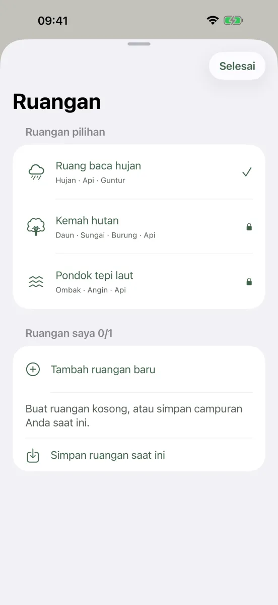

Suara dalam ruang nyata
Seret setiap suara di sekitar pendengar 3D: kiri atau kanan, depan atau belakang, atas atau bawah. Atau atur arah, ketinggian, dan jarak secara tepat. Latar yang luas tetap stabil di sekitar Anda.
Untuk iPhone · iOS 18 atau lebih baru
QuietRoom menempatkan suara alam di sekitar Anda: hujan di jendela sebelah kiri, aliran sungai di depan, api tepat di belakang. Kenakan headphone, mulai mendengarkan, dan tata ruangan hingga terasa pas.

Seret setiap suara di sekitar pendengar 3D: kiri atau kanan, depan atau belakang, atas atau bawah. Atau atur arah, ketinggian, dan jarak secara tepat. Latar yang luas tetap stabil di sekitar Anda.
Hujan, guntur, burung, sungai, ombak, angin, serangga, langkah kaki, dan api. Rekaman bervariasi secara alami, sehingga ruangan tidak pernah terasa seperti loop pendek. Pratinjau suara apa pun, termasuk suara Pro, sebelum menambahkannya.
Guntur, kicau burung, tetesan air, dan langkah kaki datang sesekali. Pilih Jarang, Normal, atau Sering untuk masing-masing. Langkah kaki juga bisa berjalan terus.
Mulai dari Ruang baca hujan, Kemah hutan, atau Pondok tepi laut, atau mulai dengan ruangan kosong. Perubahan tersimpan otomatis; ubah nama, duplikat, atau timpa ruangan tersimpan kapan saja.
Dengan headphone yang kompatibel, suara spasial tetap di tempatnya saat Anda menoleh. Headphone biasa tetap memberikan suara spasial tetap.
Tanpa akun, tanpa iklan, tanpa analitik. Suara sudah disertakan, sehingga mendengarkan, mengedit, dan menyimpan berfungsi tanpa koneksi. Timer tidur memudar dengan lembut.



Pembelian satu kali · tanpa langganan
Harga ditampilkan oleh App Store di wilayah Anda.